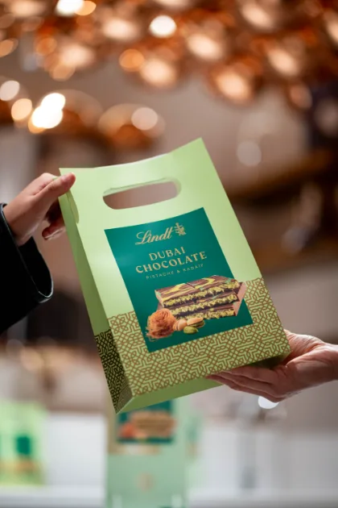
La photographie
Le passe-temps qui me permet de m'évader créativement et l'origine de mon appétence pour la direction artistique et l'image produit.
J'optimise les ventes e-commerce en combinant contenu, data produit, acquisition et UX, et recherche un CDI dès septembre 2026 sur site ou en remote (France, Belgique, Suisse, Luxembourg).
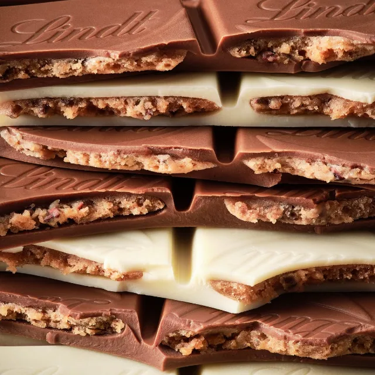
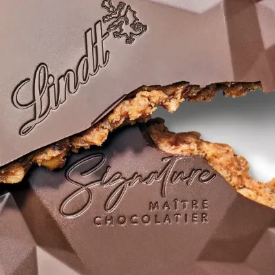
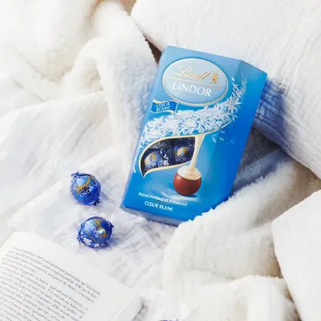
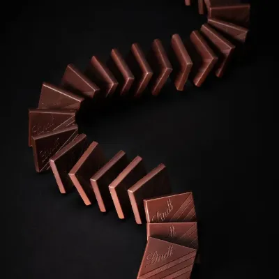
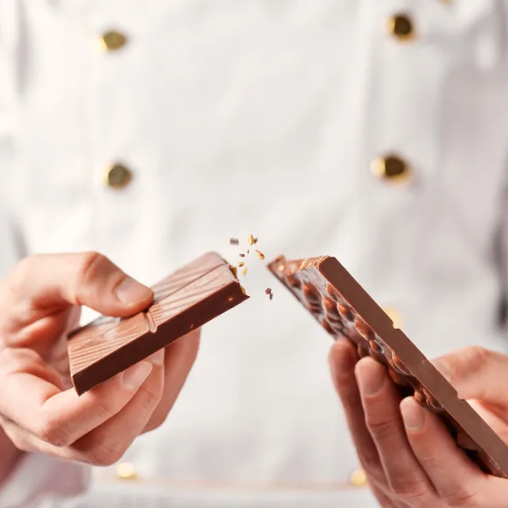
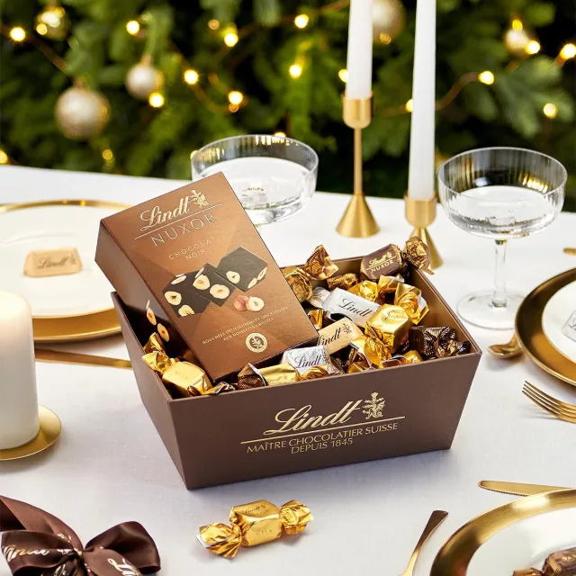
Chez Lindt, je fais le lien entre la donnée produit, les contenus et leur diffusion en ligne. Je structure le catalogue et le PIM Salsify, coordonne les contenus pour Amazon et les e-retailers, et pilote les shootings ainsi que la direction artistique.
Sur plus de 7 000 assets, mon rôle consiste principalement à coordonner. J'en produis aussi une partie, puis je les valide et les diffuse. J'ai également structuré les méthodes de travail pour rendre l'enrichissement et la validation plus simples à l'échelle du catalogue.
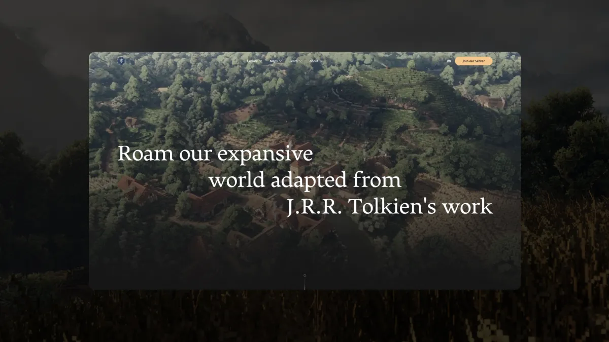
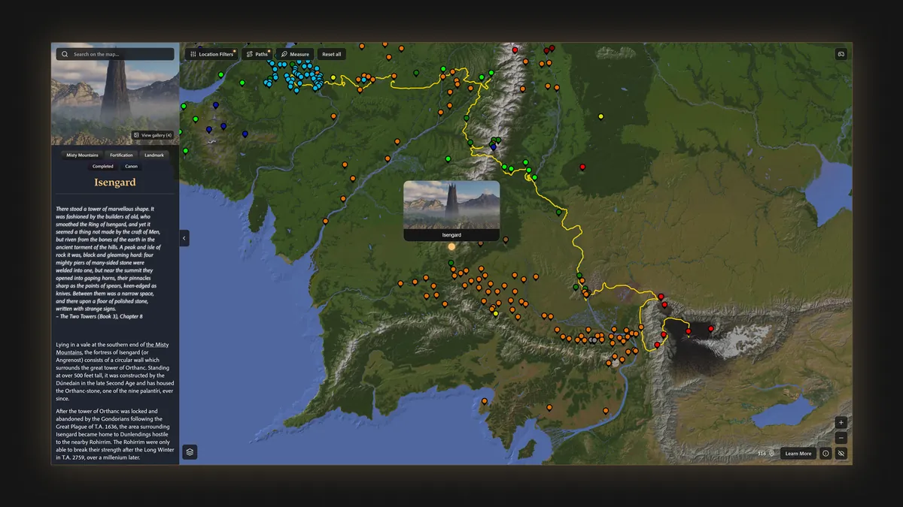
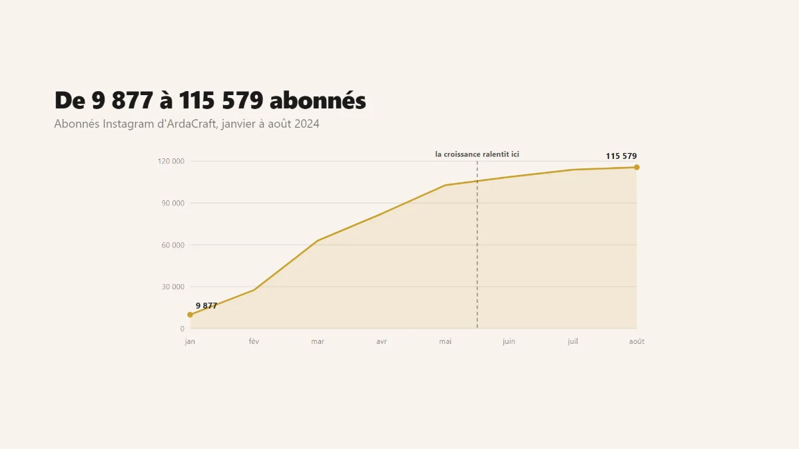
ArdaCraft est le projet où j'expérimente le plus. J'y ai mené la refonte du site, conçu une carte interactive à partir d'une opportunité SEO et développé une nouvelle approche des formats vidéo.
Ces chantiers partent de problèmes différents, mais suivent la même logique : observer ce qui fonctionne ailleurs, l'adapter au contexte d'ArdaCraft, puis mesurer ce qui change réellement.
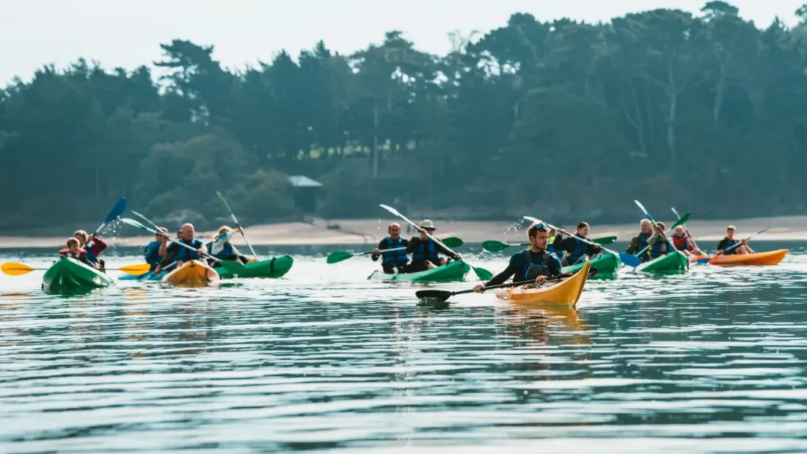
Pour Émeraude Aventure, une base nautique bretonne, j'ai structuré et optimisé les campagnes Google Ads avec un objectif simple : générer davantage de réservations directes tout en maîtrisant leur coût d'acquisition.
Aujourd'hui, je me sens particulièrement à l'aise dans les 4 champs d'expertise ci-dessous :
Structurer un catalogue, définir les attributs, enrichir les fiches et organiser leur diffusion sur les différents canaux.
Identifier les opportunités, améliorer l'architecture et la visibilité, puis suivre ce qui génère réellement du trafic ou des conversions.
Concevoir les contenus, préparer et piloter les shootings, briefer les prestataires et garantir la cohérence jusqu'à la livraison.
Concevoir des parcours et des interfaces, lire les usages, construire les tableaux de bord utiles et améliorer l'expérience à partir des données.
Mes expériences professionnelles et personnelles m'amènent à utiliser une sélection d'outils régulièrement, dont j'ai fait la liste non exhaustive ci-dessous :
“I had the pleasure of working closely with Pierre for over two years. One of his best qualities is his curiosity. He has a great way of blending creative thinking with deep technical skills. Because of his personal projects, he is always on top of the latest trends, and I learned a lot from him, especially regarding E-commerce and general digital topics. What I admire most is that his knowledge goes way beyond his daily tasks. He brings a broad perspective to everything he touches. On top of that, he is a good collaborator, highly organized, and has a sharp, critical mind. Pierre always knows exactly how to bring out the absolute best in every project.”
« Pierre s'est occupé de nos campagnes Google Ads chez Émeraude Aventure cette saison. Nous avons dépassé les 1 200 réservations directes au total, dont plus de 500 attribuées aux campagnes qu'il a pilotées, pour un coût inférieur à 2 € par réservation. Il a clairement sa part dans la réussite de cet été, qui est la meilleure saison que j'ai eue. Je recommande son travail sans problème. »
« J'ai eu le plaisir de travailler avec Pierre chez Lindt & Sprüngli pendant deux ans. Sa créativité, son sens du détail et sa capacité à concevoir des contenus à la fois engageants et performants ont été de véritables atouts pour notre équipe. Il sait transformer des idées en projets concrets tout en gardant constamment à l'esprit les enjeux business et les attentes des consommateurs.
Au-delà de ses compétences techniques, Pierre est une personne investie, à l'écoute et toujours prête à apporter son aide. Son esprit collaboratif, sa fiabilité et sa bonne humeur font de lui un collègue avec lequel il est particulièrement agréable de travailler. »
« J'ai eu le plaisir de travailler avec Pierre chez Lindt France, où il occupait le poste de Content Manager au sein de l'équipe digitale que je pilote.
Pierre se distingue par sa capacité à allier expertise technique et sens créatif. Il maîtrise des sujets complexes liés à la gestion des contenus et de la donnée produit, tout en apportant une véritable vision créative qui contribue à valoriser l'image premium de nos marques.
Véritable facilitateur, il sait fédérer les équipes, simplifier les processus et faire avancer les projets avec efficacité. Son sens du détail, sa curiosité et sa capacité à anticiper les besoins en font un collaborateur particulièrement précieux.
Force de proposition, fiable et engagé, Pierre est un profil rare capable de faire le lien entre contenu, technologie et expérience de marque. Je lui souhaite beaucoup de succès pour la suite de son parcours. »

Le passe-temps qui me permet de m'évader créativement et l'origine de mon appétence pour la direction artistique et l'image produit.
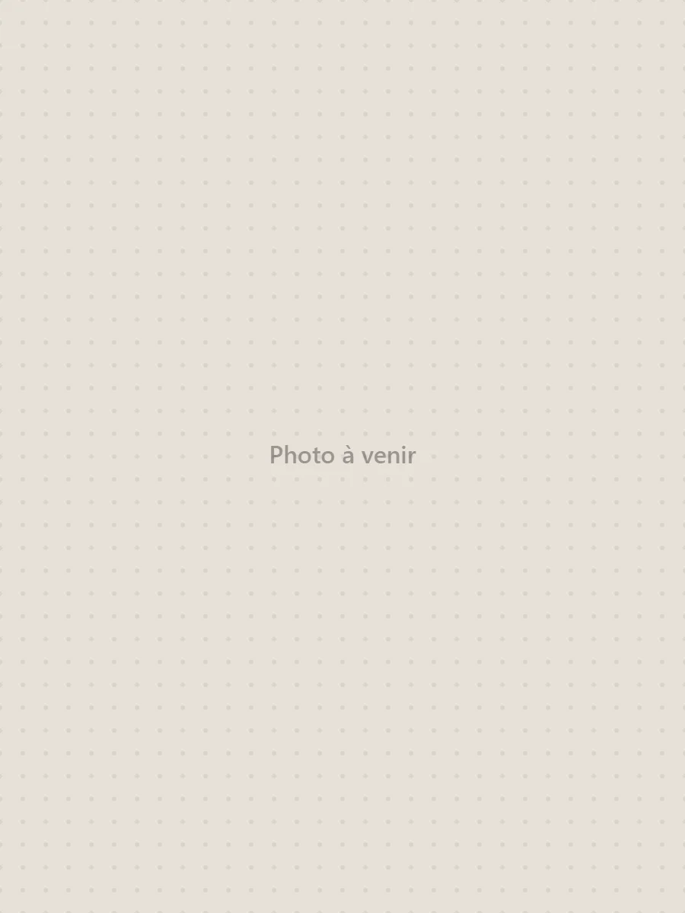
Amateur de grands espaces et d'exploration, j'adore découvrir de nouveaux endroits en courant et en me dépassant.
Si mon profil vous intéresse ou si vous avez une question, n'hésitez pas à me contacter ! :)
Conçu par